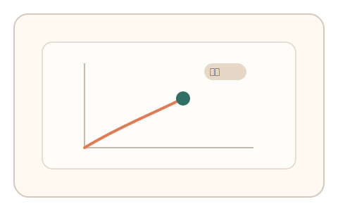
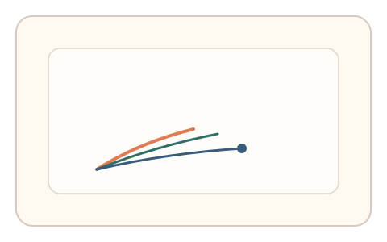
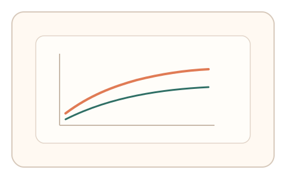

#12
生物肌肉与鼠标运动
已扩展
非均匀增益适应
在不同方向引入不一致灵敏度，观察短期试错到稳定校准的适应曲线。
概念原文
在不同方向引入不同灵敏度（例如横向 0.8、纵向 1.2），用户需要快速调整手部动作幅度以完成任务。人类适应过程有明显的“短期试错—稳定校准”特征。
通过“适应曲线形态”而非单次结果来判定真实性。
研究背景
当控制增益在不同方向不一致时，人类会通过试错逐步适应并形成校准曲线。这种非均匀适应过程具有可测的学习轨迹，可用于区分真实操控与脚本生成。
核心机制
- 设置横向/纵向不同灵敏度的短任务。
- 记录初始误差与随时间的误差下降趋势。
- 评估试错‑校准曲线与稳定区间。
- 多次切换增益以观察适应一致性。
用户流程
- 步骤 1：用户完成带非均匀增益的移动任务。
- 步骤 2：系统记录误差与调整幅度。
- 步骤 3：系统分析适应曲线并判定。
判定信号
误差下降曲线
真实用户会出现可测的适应与学习过程。
方向性纠偏幅度
适应过程会表现为方向性校正。
判定逻辑
以多段任务的误差下降斜率与稳定区间为判定依据，要求适应过程具有连续性与一致性；无适应或过度完美判异常。
对抗面
- 脚本提前获知增益参数并生成轨迹
- 回放已学习的适应曲线
防御与缓解
- 随机化增益参数与切换节奏
- 多段适应与多信号耦合判定
- 引入轻微扰动以检测实时调整
可达性与风险
提供低强度增益差异或替代任务，避免造成过大操控负担。
- 任务过长可能导致疲劳
- 设备差异影响适应曲线形态
可视化状态

状态 1：非均匀增益
横向/纵向灵敏度不同的目标任务。

状态 2：试错调整
用户逐步纠偏并形成适应轨迹。

状态 3：适应曲线
误差下降曲线用于判定。
参考资料
Motor adaptation
说明人类对控制参数变化的适应。
Motor learning
说明试错与稳定校准的学习过程。